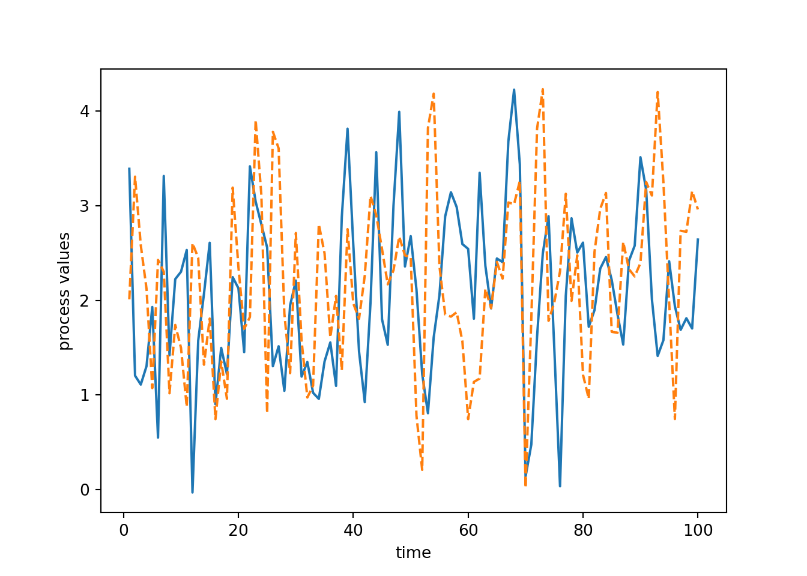
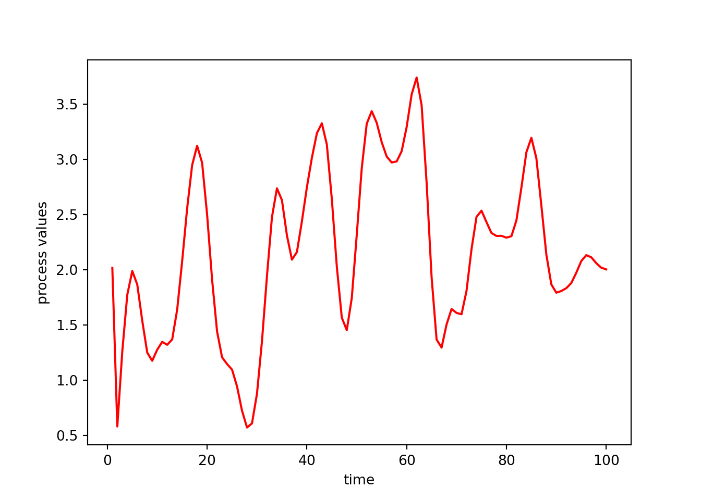

text = "Here's my number: 919-543-3300."
m = re.search("\d+", text)
m<re.Match object; span=(18, 21), match='919'>m.group()'919'm.start()18m.end()21m.span()(18, 21)Chris Paciorek
September 8, 2023
This unit covers a variety of programming concepts, illustrated in the context of Python and with comments about and connections to other languages. It also serves as a way to teach some advanced features of Python. In general the concepts are relevant in other languages, though other languages may implement things differently. One of my goals for the unit is for us to think about why things are the way they are in Python. I.e., what principles were used in creating the language and what choices were made? While other languages use different principles and made different choices, understanding what one language does in detail will be helpful when you are learning another language or choosing a language for a project.
Text manipulations in Python have a number of things in common with UNIX, R, and Perl, as many of these evolved from UNIX. When I use the term string here, I’ll be referring to any sequence of characters that may include numbers, white space, and special characters, usually stored as an object of the str class.
Here we’ll see functionality for working with strings in Python, focusing on regular expressions with the re package. This will augment our consideration of regular expressions in the shell, in particular by seeing how we can replace patterns in addition to finding them.
The re package provides Perl-style regular expressions, but it doesn’t seem to support named character classes such as [:digit:]. Instead use classes such as \d and [0-9].
In Python, you apply a matching function and then query the result to get information about what was matched and where in the string.
<re.Match object; span=(18, 21), match='919'>'919'1821(18, 21)Notice that that showed us only the first match.
We can instead use findall to get all the matches.
This is equivalent to:
The compile can be omitted and will be done implicitly, but is a good idea to do explicitly if you have a complex regex pattern that you will use repeatedly (e.g. on every line in a file). It is also a reminder that regular expressions is a separate language, that can be compiled into a program. The compilation results in an object that relies on finite state machines to match the pattern.
To ignore case, do the following:
There are several other regex flags (also called compilation flags) that can control the behavior of the matching engine in interesting ways (check out re.VERBOSE and re.MULTILINE for instance).
We can of course use list comprehension to work with multiple strings. But we need to be careful to check whether a match was found.
def return_group(pattern, txt):
m = re.search(pattern, txt)
if m:
return m.group()
else:
return None
text = ["Here's my number: 919-543-3300.", "hi John, good to meet you",
"They bought 731 bananas", "Please call 1.919.554.3800"]
[return_group("\d+", str) for str in text]['919', None, '731', '1']We can replace matching substrings with re.sub.
Recall that we can search for location-specific matches in relation to the start and end of a string.
Recall that we can search based on repetitions (as already demonstrated with the \w+ just above).
text = "Here's my number: 919-543-3300. They bought 731 bananas. Please call 1.919.554.3800."
re.findall("\d{3}[-.]\d{3}[-.]\d{4}", text)['919-543-3300', '919.554.3800']Next let’s consider grouping using ().
Here’s a basic example of using grouping via parentheses with the OR operator.
text = "At the site http://www.ibm.com. Some other text. ftp://ibm.com"
re.search("(http|ftp):\\/\\/", text).group()'http://'However, if we want to find all the matches and try to use findall, we see that it returns only the captured groups when grouping operators are present, as discussed a bit in help(re.findall), so we’d need to add an additional grouping operator to capture the full pattern when using findall:
['http', 'ftp'][('http://', 'http'), ('ftp://', 'ftp')]When you are searching for all occurrences of a pattern in a large text object, it may be beneficial to use finditer:
it = re.finditer("(http|ftp):\\/\\/", text) # http or ftp followed by ://
for match in it:
match.span()(12, 19)
(49, 55)This method behaves lazily and returns an iterator that gives us one match at a time, and only scans for the next match when we ask for it. This is similar to the behavior we saw with pandas.read_csv(chunksize = n)
As another example, the phone number detection problem could have been done a bit more compactly (as well as more generally to allow for an initial “1-” or “1.”) as:
text = "Here's my number: 919-543-3300. They bought 731 bananas. Please call 1.919.554.3800."
re.findall("((1[-.])?(\d{3}[-.]){1,2}\d{4})", text)[('919-543-3300', '', '543-'), ('1.919.554.3800', '1.', '554.')]Question: the above regex would actually match something that is not a valid phone number. What can go wrong?
Groups are also used when we need to reference back to a detected pattern when doing a replacement. This is why they are sometimes referred to as “capturing groups”. For example, here we’ll find any numbers and add underscores before and after them:
text = "Here's my number: 919-543-3300. They bought 731 bananas. Please call 919.554.3800."
re.sub("([0-9]+)", "_\\1_", text)"Here's my number: _919_-_543_-_3300_. They bought _731_ bananas. Please call _919_._554_._3800_."Here we’ll remove commas not used as field separators.
'"H4NY07011","ACKERMAN GARY L.","H","$13242",,,'How does that work? Consider that “[^\",]” matches a character that is not a quote and not a comma. The regex is such a character followed by a comma, with the matched character saved in \\1 because of the grouping operator.
Groups can also be given names, instead of having to refer to them by their numbers, but we will not demonstrate this here.
Challenge: Suppose a text string has dates in the form “Aug-3”, “May-9”, etc. and I want them in the form “3 Aug”, “9 May”, etc. How would I do this regex?
Finally, let’s consider where a match ends when there is ambiguity.
As a simple example consider that if we try this search, we match as many digits as possible, rather than returning the first “9” as satisfying the request for “one or more” digits.
That behavior is called greedy matching, and it’s the default. That example also shows why it is the default. What would happen if it were not the default?
However, sometimes greedy matching doesn’t get us what we want.
Consider this attempt to remove multiple html tags from a string.
'Do an internship course.'Notice what happens because of greedy matching.
One way to avoid greedy matching is to use a ? after the repetition specifier.
However, that syntax is a bit frustrating because ? is also used to indicate 0 or 1 repetitions, making the regex a bit hard to read/understand.
Challenge: Suppose I want to strip out HTML tags but without using the
?to avoid greedy matching. How can I be more careful in constructing my regex?
Recall that when characters are used for special purposes, we need to ‘escape’ them if we want them interpreted as the actual (literal) character. In what follows, I show this in Python, but similar manipulations are sometimes needed in the shell and in R.
This can get particularly confusing in Python as the backslash is also used to input special characters such as newline (\n) or tab (\t).
Here are some examples of using special characters.
tmp = "Harry said, \"Hi\""
print(tmp) # prints out without a newline -- this is hard to show in rendered docHarry said, "Hi"tmp = "Harry said, \"Hi\".\n"
print(tmp) # prints out with the newline -- hard to show in rendered docHarry said, "Hi".hello there<re.Match object; span=(5, 6), match='\t'>Here are some examples of using various special characters in regex syntax.
## Search for characters that are not 'z'
## (using ^ as regular expression syntax)
re.search("[^z]", "zero")
## Use list comprehension to show results for various input strings:<re.Match object; span=(1, 2), match='e'>[print(st + ":\t", re.search("[^z]", st))
for st in ["a^2", "93", "zzz", "zit", "azar"]]
## Search for either a '^' (as a regular character) or a 'z':a^2: <re.Match object; span=(0, 1), match='a'>
93: <re.Match object; span=(0, 1), match='9'>
zzz: None
zit: <re.Match object; span=(1, 2), match='i'>
azar: <re.Match object; span=(0, 1), match='a'>
[None, None, None, None, None][print(st + ":\t", re.search("[\^z]", st))
for st in ["a^2", "93", "zzz", "zit", "azar"]]
## Search for exactly three characters
## (using . as regular expression syntax)a^2: <re.Match object; span=(1, 2), match='^'>
93: None
zzz: <re.Match object; span=(0, 1), match='z'>
zit: <re.Match object; span=(0, 1), match='z'>
azar: <re.Match object; span=(1, 2), match='z'>
[None, None, None, None, None][print(st + ":\t", re.search("^.{3}$", st))
for st in ["abc", "1234", "def"]]
## Search for a period (as a regular character)abc: <re.Match object; span=(0, 3), match='abc'>
1234: None
def: <re.Match object; span=(0, 3), match='def'>
[None, None, None]3.9: <re.Match object; span=(1, 2), match='.'>
27: None
4.2: <re.Match object; span=(1, 2), match='.'>
[None, None, None]Challenge Explain why we use a single backslash to get a newline and double backslash to write out a Windows path in the examples here:
hello
againhello\nagainMy Windows path is: C:\Users\nadal.Another way to achieve this effect if your string does not contain any special characters is to prefix your string literal with an r for “raw”:
Advanced note: Searching for an actual backslash gets even more complicated (lookup backslash plague or baskslash hell), because we need to pass two backslashes as the regular expression, so that a literal backslash is searched for. However, to pass two backslashes, we need to escape each of them with a backslash so Python doesn’t treat each backslash as part of a special character. So that’s four backslashes to search for a single backslash! Yikes. One rule of thumb is just to keep entering backslashes until things work!
## Search for an actual backslash
tmp = "something \ other\n"
print(tmp) # notice the escaping of the literal backslashsomething \ other<re.Match object; span=(10, 11), match='\\'>bad escape (end of pattern) at position 0Again here you can use “raw” strings, at the price of losing the ability to use any special characters:
<re.Match object; span=(10, 11), match='\\'>This tells python to treat this sting literal without any escaping, but does this does not apply to the regex engine (or else we would have used a single backslash). So yes. This can be quite confusing.
Warning Be careful when cutting and pasting from documents that are not text files as you may paste in something that looks like a single or double quote, but which R cannot interpret as a quote because it’s some other ASCII quote character. If you paste in a ” from PDF, it will not be interpreted as a standard R double quote mark.
Similar things come up in the shell and in R, but in the shell you often don’t need as many backslashes. E.g. you could do this to look for a literal backslash character.
Scripting languages allow one to interact with the operating system in various ways. Most allow you to call out to the shell to run arbitrary shell code and save results within your session.
I’ll assume everyone knows about the following functions/functionality for interacting with the filesystem and file in Python: os.getcwd, os.chdir, import, pickle.dump, pickle.load
Also in IPython there is additional functionality/syntax.
Here are a variety of tools for interacting with the operating system:
To run UNIX commands from within Python, use subprocess.run(), as follows, noting that we can save the result of a system call to an R object:
import subprocess, io
subprocess.run(["ls", "-al"]) ## results apparently not shown when compiled...CompletedProcess(args=['ls', '-al'], returncode=0)b'total 3048\ndrwxr-sr-x 13 paciorek scfstaff 79 Oct 2 08:41 .\ndrwxr-sr-x 13 paciorek scfstaff 50 Sep 29 08:35 ..\n-rw-r--r-- 1 paciorek scfstaff 117142 Sep 7 18:13 chatgpt-regex-numbers.png\n-rw-r--r-- 1 paciorek scfstaff 176 Aug 29 13:46 debug_code.py\n-rw-r--r-- 1 paciorek scfstaff 216 Jul 20 08:08 debug_code.py~\n-rw-r--r-- 1 paciorek scfstaff 42 Aug 29 13:46 dummyfun.py\n-rw-r--r-- 1 paciorek scfstaff 175396 Aug 29 13:46 exampleGraphic.png\n-rw-r--r-- 1 paciorek scfstaff 1036183 Aug 29 13:46 file.txt\n-rw-r--r-- 1 paciorek scfstaff 59 Aug 29 13:46 foo.py\n-rw-r--r-- 1 paciorek scfstaff 20260 Jul 26 11:45 graph.png\n-rw-r--r-- 1 paciorek scfstaff 200 Aug 24 08:27 html.tips\n-rw-r--r-- 1 paciorek scfstaff 45 Aug 24 07:54 html.tips~\ndrwxr-sr-x 2 paciorek scfstaff 3 Aug 28 16:39 .ipynb_checkpoints\n-rw-r--r-- 1 paciorek scfstaff 2464 Jul 26 11:45 linked-list.png\n-rw-r--r-- 1 paciorek scfstaff 98 Sep 21 11:37 local.py\n-rw-r--r-- 1 paciorek scfstaff 79 Aug 29 13:46 mymod.py\ndrwxr-sr-x 4 paciorek scfstaff 8 Sep 15 17:26 mypkg\n-rw-r--r-- 1 paciorek scfstaff 401 Aug 29 13:46 mysqrt.py\n-rw-r--r-- 1 paciorek scfstaff 63998 Aug 18 11:19 normalized_example.png\ndrwxr-sr-x 2 paciorek scfstaff 13 Oct 2 08:40 __pycache__\n-rw-r--r-- 1 paciorek scfstaff 223 Jul 9 14:10 q.py\n-rw-r--r-- 1 paciorek scfstaff 590 Jul 19 18:19 run_no_break2.py\n-rw-r--r-- 1 paciorek scfstaff 588 Jul 19 18:14 run_no_break2.py~\n-rw-r--r-- 1 paciorek scfstaff 381 Jul 19 17:50 run_no_break_full.py~\n-rw-r--r-- 1 paciorek scfstaff 573 Aug 29 13:46 run_no_break.py\n-rw-r--r-- 1 paciorek scfstaff 656 Jul 19 17:55 run_no_break.py~\n-rw-r--r-- 1 paciorek scfstaff 591 Aug 29 13:46 run_with_break.py\n-rw-r--r-- 1 paciorek scfstaff 656 Jul 19 17:53 run_with_break.py~\n-rw-r--r-- 1 paciorek scfstaff 385 Aug 29 13:46 stratified.py\n-rw-r--r-- 1 paciorek scfstaff 586 Jul 19 17:18 stratified.py~\n-rw-r--r-- 1 paciorek scfstaff 385 Jul 19 17:20 stratified_with_break.py~\n-rw-r--r-- 1 paciorek scfstaff 33 Jul 19 17:05 test2.py\n-rw-r--r-- 1 paciorek scfstaff 79 Sep 15 11:46 test3.py\n-rw-r--r-- 1 paciorek scfstaff 25 Jul 19 17:04 test.py~\n-rw-r--r-- 1 paciorek scfstaff 404 Aug 29 09:29 test.qmd\n-rw-r--r-- 1 paciorek scfstaff 354 Aug 28 16:38 test.qmd~\n-rw-r--r-- 1 paciorek scfstaff 66 Aug 29 13:46 test_scope.py\n-rw-r--r-- 1 paciorek scfstaff 18 Sep 8 14:57 test.txt\n-rw-r--r-- 1 paciorek scfstaff 10 Aug 31 08:01 tmp2.txt\n-rw-r--r-- 1 paciorek scfstaff 2 Aug 25 13:29 tmp3.txt\n-rw-r--r-- 1 paciorek scfstaff 57 Sep 8 07:53 tmp.qmd\n-rw-r--r-- 1 paciorek scfstaff 55 Sep 8 07:52 tmp.qmd~\n-rw-r--r-- 1 paciorek scfstaff 14 Aug 31 08:22 tmp.txt\n-rw-r--r-- 1 paciorek scfstaff 4 Aug 31 08:01 tmp.txt~\n-rw-r--r-- 1 paciorek scfstaff 9357 Jul 26 11:45 tree.png\ndrwxr-sr-x 4 paciorek scfstaff 4 Jul 26 12:26 unit10-linalg_cache\n-rw-r--r-- 1 paciorek scfstaff 81631 Aug 29 13:46 unit10-linalg.qmd\n-rw-r--r-- 1 paciorek scfstaff 78863 Jul 5 15:41 unit10-linalg.qmd~\n-rw-r--r-- 1 paciorek scfstaff 9509 Aug 29 13:46 unit1-intro.md\n-rw-r--r-- 1 paciorek scfstaff 8908 Jul 26 07:47 unit1-intro.md~\n-rw-r--r-- 1 paciorek scfstaff 56222 Aug 31 08:00 unit2-dataTech.qmd\n-rw-r--r-- 1 paciorek scfstaff 52630 Jun 8 13:16 unit2-dataTech.qmd~\n-rw-r--r-- 1 paciorek scfstaff 18297 Aug 31 09:10 unit3-bash.qmd\n-rw-r--r-- 1 paciorek scfstaff 12674 Aug 26 12:07 unit3-bash.qmd~\n-rw-r--r-- 1 paciorek scfstaff 12674 Jul 26 11:50 unit3-bash.Rmd~\n-rw-r--r-- 1 paciorek scfstaff 3927 Aug 29 13:46 unit3-bash.sh\n-rw-r--r-- 1 paciorek scfstaff 41222 Sep 6 18:05 unit4-goodPractices.qmd\n-rw-r--r-- 1 paciorek scfstaff 16432 Jul 18 16:17 unit4-goodPractices.qmd~\ndrwxr-sr-x 4 paciorek scfstaff 4 Jul 26 12:29 unit5-programming_cache\ndrwxr-sr-x 5 paciorek scfstaff 5 Oct 2 08:41 unit5-programming_files\n-rw-r--r-- 1 paciorek scfstaff 126425 Oct 2 08:28 unit5-programming.qmd\n-rw-r--r-- 1 paciorek scfstaff 127020 Oct 2 08:41 unit5-programming.rmarkdown\n-rw-r--r-- 1 paciorek scfstaff 250339 Oct 2 08:41 unit5-programming.tex\ndrwxr-sr-x 4 paciorek scfstaff 4 Jul 24 17:08 unit6-parallel_cache\ndrwxr-sr-x 3 paciorek scfstaff 3 Sep 29 08:34 unit6-parallel_files\n-rw-r--r-- 1 paciorek scfstaff 50875 Oct 2 08:41 unit6-parallel.qmd\n-rw-r--r-- 1 paciorek scfstaff 45558 Jul 26 09:33 unit6-parallel.qmd~\ndrwxr-sr-x 4 paciorek scfstaff 4 Jul 27 09:40 unit7-bigData_cache\n-rw-r--r-- 1 paciorek scfstaff 50238 Aug 29 13:46 unit7-bigData.qmd\n-rw-r--r-- 1 paciorek scfstaff 69916 Jul 26 17:52 unit7-bigData.qmd~\ndrwxr-sr-x 4 paciorek scfstaff 4 May 25 17:14 unit8-numbers_cache\ndrwxr-sr-x 3 paciorek scfstaff 3 Jul 26 12:27 unit8-numbers_files\n-rw-r--r-- 1 paciorek scfstaff 29633 Aug 29 13:46 unit8-numbers.qmd\n-rw-r--r-- 1 paciorek scfstaff 29174 May 24 12:22 unit8-numbers.qmd~\n-rw-r--r-- 1 paciorek scfstaff 42193 Aug 29 13:46 unit9-sim.qmd\n-rw-r--r-- 1 paciorek scfstaff 42193 Jul 10 10:58 unit9-sim.qmd~\n-rw-r--r-- 1 paciorek scfstaff 72 Aug 28 16:39 Untitled.ipynb\n-rw-r--r-- 1 paciorek scfstaff 142 Aug 29 13:46 vec_orig.py\n-rw-r--r-- 1 paciorek scfstaff 555 Oct 2 08:40 vec.pyc\n'with io.BytesIO(files.stdout) as stream: # create a file-like object
content = stream.readlines()
content[2:4][b'drwxr-sr-x 13 paciorek scfstaff 50 Sep 29 08:35 ..\n', b'-rw-r--r-- 1 paciorek scfstaff 117142 Sep 7 18:13 chatgpt-regex-numbers.png\n']There are also a bunch of functions that will do specific queries of the filesystem, including
There are some tools for dealing with differences between operating systems. os.path.join is a nice example:
['coop.txt.gz', 'test.db', 'cpds.csv', 'IPs.RData', 'airline.csv', 'stackoverflow-2016.db', 'airline.parquet', 'hivSequ.csv', 'RTADataSub.csv', 'precip.txt', 'precipData.txt']It’s best if you can to write your code, as shown here with os.path.join, in a way that is agnostic to the underlying operating system.
To get some info on the system you’re running on:
To retrieve environment variables:
'/system/linux/mambaforge-3.11/bin:/usr/local/linux/mambaforge-3.11/condabin:/system/linux/mambaforge-3.11/condabin:/system/linux/mambaforge-3.11/bin:/system/linux/mambaforge-3.11/condabin:/system/linux/mambaforge-3.11/bin:/system/linux/julia-1.8.5/bin:/system/linux/mambaforge-3.11/bin:/accounts/vis/paciorek/bin:/system/linux/bin:/usr/local/bin:/usr/bin:/usr/sbin:/usr/lib/rstudio-server/bin:/accounts/vis/paciorek/.local/bin'You can have an Python script act as a shell script (like running a bash shell script) as follows.
example.py#!/usr/bin/python (like #!/bin/bash in a bash shell file, as seen in Unit 2) or for more portability across machines, include #!/usr/bin/env python.chmod: chmod ugo+x example.py../example.pyIf you want to pass arguments into your script, you can do so with the argparse package.
Now we can run it as follows in the shell:
Use Ctrl-C to interrupt execution. This will generally back out gracefully, returning you to a state as if the command had not been started. Note that if Python is exceeding the amount of memory available, there can be a long delay. This can be frustrating, particularly since a primary reason you would want to interrupt is when Python runs out of memory.
Scripting languages such as R, Python, and Julia allow you to call out to “external code”, which often means C or C++ (but also Fortran, Java and other languages).
Calling out to external code is particularly important in languages like R and Python that are often much slower than compiled code and less important in a fast language like Julia (which uses Just-In-Time compilation – more on that later).
In fact, the predecessor language to R, which was called ‘S’ was developed specifically (at AT&T’s Bell Labs in the 1970s and 1980s) as an interactive wrapper around Fortran, the numerical programming language most commonly used at the time (and still widely relied on today in various legacy codes).
In Python, one can directly call out to C or C++ code or one can use Cython to interact with C. With Cython, one can:
In R, one can call directly out to C or C++ code using .Call or one can use the Rcpp package. Rcpp is specifically designed to be able to write C++ code that feels somewhat like writing R code and where it is very easy to pass data between R and C++.
Scripting languages that become popular generally have an extensive collection of add-on packages available online (the causal relationship of the popularity and the extensive add-on packages goes in both directions).
A big part of Python’s popularity is indeed the extensive collection of add-on packages on PyPI (and GitHub and elsewhere) and via Conda that provide much of Python’s functionality (including core numerical capabilities via numpy and scipy).
To make use of a package it needs to be installed on your system (using pip install or conda install) once and loaded into Python (using the import statement) every time you start a new session.
Some modules are installed by default with Python (e.g., os and re), but all need to be loaded by the user in a given Python session.
A module is a collection of related code in a file with the extension .py. The code can include functions, classes, and variables, as well as runnable code. To access the objects in the module, you need to import the module.
Here we’ll create mymod.py from the shell, but of course usually one would create it in an editor.
The import statement allows one to get access to code in a module. Importantly it associates the names of the objects in the module with a name accessible in the scope in which it was imported (i.e., the current context). The mapping of names (references) to objects is called a namespace. We discuss scopes and namespaces in more detail later.
name 'mymod' is not defined<module 'mymod' from '/accounts/vis/paciorek/teaching/243fall23/stat243-fall-2023/units/mymod.py'>Error: NameError: name 'x' is not defined<class 'range'>7['__builtins__', '__cached__', '__doc__', '__file__', '__loader__', '__name__', '__package__', '__spec__', 'myfun', 'range', 'x']73So y and mymod are in the global namespace and range and x are in the module namespace of mymod. You can access the built-in range function from the global namespace but it turns out it’s actually in the built-ins scope (more later).
Note the usefulness of distinguishing the objects in a module from those in the global namespace. We’ll discuss this more in a bit.
That said, we can make an object defined in a module directly accessible in the current scope (adding it to the global namespace in this example) at which point it is distinct from the object in the module:
7['__annotations__', '__builtins__', '__doc__', '__loader__', '__name__', '__package__', '__spec__', 'content', 'files', 'io', 'it', 'm', 'match', 'math', 'mymod', 'os', 'pattern', 'platform', 'r', 're', 'return_group', 'stream', 'subprocess', 'sys', 'text', 'time', 'tmp', 'x', 'y']53But in general we wouldn’t want to use from to import objects in that fashion because we could introduce name conflicts and we reduce modularity.
That said, it can be tedious to always have to type the module name (and in many cases there are multiple submodule names you’d also need to type).
A package is a directory containing one or more modules and with a file named __init__.py that is called when a package is imported and serves to initialize the package.
Let’s create a basic package.
Note that if there were other modules, we could have imported from those as well.
Now we can use the objects from the module without having to know that it was in a particular module (because of how __init__.py was set up).
Note, one can set __all__ in an __init__.py to define what is imported, which makes clear what is publicly available and hides what is considered internal.
Packages can also have modules in nested directories, achieving additional modularity via subpackages. A package can automatically import the subpackages via the main __init__.py or require the user to import them manually, e.g., import mypkg.mysubpkg.
Welcome to my package's subpackage.7Note that a given __init__.py is invoked when importing anything nested within the directory containing the __init__.py.
If we wanted to automatically import the subpackage we would add import mypkg.mysubpkg to mypkg/__init__.py.
One would generally not import the items from mysubpkg directly into the mypkg namespace but there may be cases one would do something like this. For example np.linspace is actually found numpy/core/function_base.py, but we don’t need to refer to numpy.core.linspace.
If a package is on PyPI or available through Conda but not on your system, you can install it easily (usually). You don’t need root permission on a machine to install a package, though you may need to use pip install --user or set up a new Conda environment.
Packages often depend on other packages. In general, if one package depends on another, pip or conda will generally install the dependency automatically.
One advantage of Conda is that it can also install non-Python packages on which a Python package depends, whereas with pip you sometimes need to install a system package to satisfy a dependency.
It’s not uncommon to run into a case where conda has trouble installing a package because of version inconsistencies amongst the dependencies. mamba is a drop-in replacement for conda and often does a better job of this “dependency resolution”. We use mamba by default on the SCF.
For reproducibility, it’s important to know the versions of the packages you use (and the version of Python). pip and conda make it easy to do this. You can create a requirements file that captures the packages you are currently using (and, critically, their versions) and then install exactly that set of packages (and versions) based on that requirements file.
pip freeze > requirements.txt
pip install -r requirements.txt
conda env export > environment.yml
conda env create -f environment.ymlConda is a general package manager. You can use it to manage Python packages but lots of other software as well, including R and Julia.
Conda environments provide an additional layer of modularity/reproducibility, allowing you to set up a fully reproducible environment for your computation. Here (by explicitly giving python=3.11) the Python 3.11 executable and all packages you install in the environment are fully independent of whatever Python executables are installed on the system.
Side note: if you use conda activate rather than source activate, Conda will prompt you to run conda init, which will make changes to your ~/.bashrc that, for one, activate the Conda base environment automatically when a shell is started. This may be fine, but it’s helpful to be aware.
Packages in Python (and in R, Julia, etc.) may be installed in various places on the filesystem, and it sometimes it is helpful (e.g., if you end up with multiple versions of a package installed on your system) to be able to figure out where on the filesystem the package is being loaded from. If you run pkgname.__file__, you’ll be able to see where the imported package is installed. pkname.__version__ will show the version of the package (as will pip list or conda list, for all packages).
sys.path shows where Python looks for packages on your system.
The difference between a source package and a binary package is that the source package has the raw Python (and C/C++ and Fortran, in some cases) code as text files, while the binary package has all the non-Python code in a binary/non-text format, with the C/C++ and Fortran code already having been compiled.
If you install a package from source, C/C++/Fortran code will be compiled on your system (if the package has such code). That should mean the compiled code will work on your system, but requires you to have a compiler available and things properly configured. A binary package doesn’t need to be compiled on your system, but in some cases the code may not run on your system because it was compiled in such a way that is not compatible with your system.
Python wheels are a binary package format for Python packages. Wheels for some packages will vary by platform (i.e., operating system) so that the package will install correctly on the system where it is being installed.
Please see the data structures section of Unit 2 for some general discussion of data structures.
We’ll also see more complicated data structures when we consider objects in the section on object-oriented programming.
The term ‘type’ refers to how a given piece of information is stored and what operations can be done with the information.
‘Primitive’ types are the most basic types that often relate directly to how data are stored in memory or on disk (e.g., boolean, integer, numeric (real-valued, aka double or floating point), character, pointer (aka address, reference).
In compiled languages like C and C++, one has to define the type of each variable. Such languages are statically typed. Interpreted (or scripting) languages such as Python and R have dynamic types. One can associate different types of information with a given variable name at different times and without declaring the type of the variable:
In contrast in a language like C, one has to declare a variable based on its type before using it:
Dynamic typing can be quite helpful from the perspective of quick implementation and avoiding tedious type definitions and problems from minor inconsistencies between types (e.g., multiplying an integer by a real-valued number). But static typing has some critical advantages from the perspective of software development, including:
More complex types in Python (and in R) often use references (pointers, aka addresses) to the actual locations of the data. We’ll see this in detail when we discuss Memory.
You should be familiar with the important built-in data types in Python, most importantly lists, tuples, and dictionaries, as well as basic scalar types such as integers, floats, and strings.
Let’s look at the type of various built-in data structures in Python and in numpy, which provides important types for numerical computing.
<class 'int'><class 'float'><class 'str'><class 'bool'><class 'list'><class 'numpy.ndarray'><class 'numpy.int64'><class 'numpy.float64'><class 'numpy.ndarray'>Sometimes numpy may modify a type to make things easier for you, which often works well, but you may want to control it yourself to be sure:
array([3. , 5. , 7.3])<class 'numpy.float64'><class 'numpy.float64'><class 'numpy.float64'>This can come up when working on a GPU, where the default is usually 32-bit (4-byte) numbers instead of 64-bit (8-byte) numbers. ### Composite objects
Many objects can be composite (e.g., a list of dictionaries or a dictionary of lists, tuples, and strings).
Most objects in Python can be modified in place (i.e., modifying only some of the object), but tuples, strings, and sets are immutable:
This also goes by the term coercion and casting. Casting often needs to be done explicitly in compiled languages and somewhat less so in interpreted languages like Python.
We can cast (coerce) between different basic types:
Some common conversions are converting numbers that are being interpreted as strings into actual numbers and converting between booleans and numeric values.
In some cases Python will automatically do conversions behind the scenes in a smart way (or occasionally not so smart way). Consider these attempts/examples of implicit coercion:
2x = np.random.normal(size = 5)
try:
x[3] = 'hat' # What do you think is going to happen?
except Exception as error:
print(error)
could not convert string to float: 'hat'R is less strict and will do conversions in some cases that Python won’t:
What are the advantages and disadvantages of the different behaviors of Python and R?
Hopefully you’re also familiar with the Pandas dataframe type.
Pandas picked up the idea of dataframes from R and functionality is similar in many ways to what you can do with R’s dplyr package.
dplyr and pandas provide a lot of functionality for the “split-apply-combine” framework of working with “rectangular” data.
Often analyses are done in a stratified fashion - the same operation or analysis is done on subsets of the data set. The subsets might be different time points, different locations, different hospitals, different people, etc.
The split-apply-combine framework is intended to operate in this kind of context: - first one splits the dataset by one or more variables, - then one does something to each subset, and - then one combines the results.
split-apply-combine is also closely related to the famous Map-Reduce framework underlying big data tools such as Hadoop and Spark.
It’s also very similar to standard SQL queries involving filtering, grouping, and aggregation.
There are a number of broad categories of kinds of objects: mapping, number, sequence, iterator. These are called object protocols.
All objects that fall in a given category share key characteristics. For example sequence objects have a notion of “next”, while iterator objects have a notion of “stopping”.
If you implement your own class that falls into one of these categories, it should follow the relevant protocol by providing the required methods. For example a container class that supports iteration should provide the __iter__ and __next__ methods.
Here we see that tuples are iterable containers:
apple
banana
cherryapplebanana'cherry'('clinton', 'Dem')('bush', 'Rep')We can also go from an iterable object to a standard list:
Object-oriented and functional programming are two important approaches to programming.
Functional programming (FP) focuses on writing functions that take inputs and produce outputs. Ideally those functions don’t change the state (i.e., the values) of any variables and can be treated as black boxes. Functions can be treated like other variables, such as passing functions as arguments to another function (as one does with map in Python).
Object-oriented programming (OOP) revolves around objects that belong to classes. The class of an object defines the fields (the data objects) holding information and methods that can be applied to those fields. When one calls a method, it may modify the value of the fields. A statistical analogy is that an object of a class is like the realization (the object) of a random variable (the class).
One can think of functional programming as being focused on actions (or verbs to make an analogy with human language). One carries out a computation as a sequence of function calls. One can think of OOP as being focused on the objects (or nouns). One carries out a computation as a sequence of operations with the objects, using the class methods.
Many languages are multi-paradigm, containing aspects of both approaches and allowing programmers to use either approach. Both R and Python are like this, though one would generally consider R to be more functional and Python to be more object-oriented.
Let’s illustrate the ideas with some numpy and list functionality.
import numpy as np
x = np.array([1.2, 3.5, 4.2, 9.7])
x.shape # field (or attribute) of the numpy array class
x.sum() # method of the class
np.sum(x) # equivalent numpy function
len(x) # built-in function
# functional approach: apply functions sequentially
x2 = np.reshape(x, (2,2))
x2t = np.transpose(x2)
# functional, but using class methods
x2 = x.reshape(2,2)
x2t = x2.transpose()
# OOP: modify objects using class methods
y = list([1.2, 3.5, 4.2])
y.append(7.9) # y modified in place using class methodDifferent people have different preferences, but which is better sometimes depends on what you are trying to do. If your computation is a data analysis pipeline that involves a series of transformations of some data, a functional approach might make more sense, since the focus is on a series of actions rather than the state of objects. If your computation involves various operations on fixed objects whose state needs to change, OOP might make more sense. For example, if you were writing code to keep track of student information, it would probably make sense to have each student as an object of a Student class with methods such as register and assign_grade.
OOP involves organizing your code around objects that contain information, and methods that operate in specific ways on those objects. Objects belong to classes. A class is made up of fields (the data) that store information and methods (functions) that operate on the fields.
By analogy, OOP focuses on the nouns, with the verbs being part of the nouns, while FP focuses on the verbs (the functions), which operate on the nouns (the arguments).
Some of the standard concepts in object-oriented programming include encapsulation, inheritance, polymorphism, and abstraction.
Encapsulation involves preventing direct access to internal data in an object from outside the object. Instead the class is designed so that access (reading or writing) happens through the interface set up by the programmer (e.g., ‘getter’ and ‘setter’ methods). However, Python actually doesn’t really enforce the notion of internal or private information.
Inheritance allows one class to be based on another class, adding more specialized features. For example in the statsmodels package, the OLS class inherits from the WLS class.
Polymorphism allows for different behavior of an object or function depending on the context. A polymorphic function behaves differently depending on the input types. For example, think of a print function or an addition operator behaving differently depending on the type of the input argument(s). A polymorphic object is one that can belong to different classes (e.g., based on inheritance), and a given method name can be used with any of the classes. An example would be having a base or super class called ‘algorithm’ and various specific machine learning algorithms inheriting from that class. All of the classes might have a ‘predict’ method.
Abstraction involves hiding the details of how something is done (e.g., via the method of a class), giving the user an interface to provide inputs and get outputs. By making the actual computation a black box, the programmer can modify the internals without changing how a user uses the system.
Classes generally have constructors that initialize objects of the class and destructors that remove objects.
Python provides a pretty standard approach to writing object-oriented code focused on classes.
Our example is to create a class for working with random time series. Each object of the class has specific parameter values that control the stochastic behavior of the time series. With a given object we can simulate one or more time series (realizations).
Here’s the initial definition of the class with methods and fields.
import numpy as np
class tsSimClass:
'''
Class definition for time series simulators
'''
def __init__(self, times, mean = 0, corParam = 1):
## add assertions that corParam is numeric, length 1 and times is np array
self._times = times
self.n = len(times)
self.mean = mean
self.corParam = corParam
self._currentU = False
self._calcMats()
def __str__(self): # 'print' method
return f"An object of class `tsSimClass` with {self.n} time points."
def __len__(self):
return self.n
def setTimes(self, newTimes):
self._times = newTimes
self._calcMats()
def getTimes(self):
return self._times
def simulate(self):
if not self._currentU:
self._calcMats()
## analogous to mu+sigma*z for generating N(mu, sigma^2)
return self.mean + np.dot(self.U.T, np.random.normal(size = self.n))
def _calcMats(self):
## calculates correlation matrix and Cholesky factor
lagMat = np.abs(self._times[:, np.newaxis] - self._times)
corMat = np.exp(-lagMat ** 2 / self.corParam ** 2)
self.U = np.linalg.cholesky(corMat)
print("Done updating correlation matrix and Cholesky factor.")
self._currentU = TrueNow let’s see how we would use the class.
Done updating correlation matrix and Cholesky factor.An object of class `tsSimClass` with 100 time points.np.random.seed(1)
## here's a simulated time series
y1 = myts.simulate()
import matplotlib.pyplot as plt
plt.plot(myts.getTimes(), y1, '-')
plt.xlabel('time')
plt.ylabel('process values')
## simulate a second series
y2 = myts.simulate()
plt.plot(myts.getTimes(), y2, '--')
plt.show()
We could set up a different object that has different parameter values. That new simulated time series is less wiggly because the corParam value is larger than before.
Done updating correlation matrix and Cholesky factor.np.random.seed(1)
## here's a simulated time series with a different value of
## the correlation parameter (corParam)
y3 = myts2.simulate()
plt.plot(myts2.getTimes(), y3, '-', color = 'red')
plt.xlabel('time')
plt.ylabel('process values')
plt.show()
Next let’s think about when copies are made. In the next example mytsRef is a copy of myts in the sense that both names point to the same underlying object. But no data were copied when the assignment to mytsRef was done.
mytsRef = myts
## 'mytsRef' and 'myts' are names for the same underlying object
import copy
mytsFullCopy = copy.deepcopy(myts)
## Now let's change the values of a field
myts.setTimes(np.arange(1,1001,10))Done updating correlation matrix and Cholesky factor.array([ 1, 11, 21, 31])array([ 1, 11, 21, 31])array([1, 2, 3, 4])In contrast mytsFullCopy is a reference to a different object, and all the data from myts had to be copied over to mytsFullCopy. This takes additional memory (and time), but is also safer, as it avoids the possibility that the user might modify myts and not realize that they were also affecting mytsRef. We’ll discuss this more when we discuss copying in the section on memory use.
Those of you familiar with OOP will probably be familiar with the idea of public and private fields and methods.
Why have private fields (i.e., encapsulation)? The use of private fields shields them from modification by users. Python doesn’t really provide this functionality but by convention, attributes whose name starts with _ are considered private. In this case, we don’t want users to modify the times field. Why is this important? In this example, the correlation matrix and the Cholesky factor U are both functions of the vector of times. So we don’t want to allow a user to directly modify times. If they did, it would leave the fields of the object in inconsistent states. Instead we want them to use setTimes, which correctly keeps all the fields in the object internally consistent (by calling _calcMats). It also allows us to improve efficiency by controlling when computationally expensive operations are carried out.
In a module, objects that start with _ are a weak form of private attributes. Users can access them, but from foo import * does not import them.
Challenge
How would you get Python to quit immediately, without asking for any more information, when you simply type
q(no parentheses!) instead ofquit()? There are actually a couple ways to do this. (Hint: you can do this by understanding what happens when you typeqand how to exploit the characteristics of Python classes.)
Inheritance can be a powerful way to reduce code duplication and keep your code organized in a logical (nested) fashion. Special cases can be simple extensions of more general classes.
class Bear:
def __init__(self, name, age):
self.name = name
self.age = age
def __str__(self):
return f"A bear named '{self.name}' of age {self.age}."
def color(self):
return "unknown"
class GrizzlyBear(Bear):
def __init__(self, name, age, num_people_killed = 0):
super().__init__(name, age)
self.num_people_killed = num_people_killed
def color(self):
return "brown"
yog = Bear("Yogi the Bear", 23)
print(yog)A bear named 'Yogi the Bear' of age 23.'unknown'A bear named 'Jackson Hole Grizzly 399' of age 35.'brown'0Here the GrizzlyBear class has additional fields/methods beyond those inherited from the base class (the Bear class), i.e., num_people_killed (since grizzly bears are much more dangerous than some other kinds of bears), and perhaps additional or modified methods. Python uses the methods specific to the GrizzlyBear class if present before falling back to methods of the Bear class if not present in the GrizzlyBear class.
The above is an example of polymorphism. Instances of the GrizzlyBear class are polymorphic because they can have behavior from both the GrizzlyBear and Bear classes. The color method is polymorphic in that it can be used for both classes but is defined to behave differently depending on the class.
More relevant examples of inheritance in Python and R include how regression models are handled. E.g., in Python’s statsmodels, the OLS class inherits from the WLS class.
Both fields and methods are attributes.
We saw the notion of attributes when looking at HTML and XML, where the information was stored as key-value pairs that in many cases had additional information in the form of attributes.
Here count is a class attribute while name and age are instance attributes.
class Bear:
count = 0
def __init__(self, name, age):
self.name = name
self.age = age
Bear.count += 1
yog = Bear("Yogi the Bear", 23)
yog.count12The class attribute allows us to manipulate information relating to all instances of the class, as seen here where we keep track of the number of bears that have been created.
It turns out we can add instance attributes on the fly in some cases, which is a bit disconcerting in some ways.
Let’s consider the len function in Python. It seems to work magically on various kinds of objects.
Suppose you were writing the len function. What would you have to do to make it work as it did above? What would happen if a user wants to use len with a class that they define?
Instead, Python implements the len function by calling the __len__ method of the class that the argument belongs to.
__len__ is a dunder method (a “Double-UNDERscore” method), which we’ll discuss more in a bit.
Something similar occurs with operators:
This use of generic functions is convenient in that it allows us to work with a variety of kinds of objects using familiar functions.
The use of such generic functions and operators is similar in spirit to function or method overloading in C++ and Java. It is also how the (very) old S3 system in R works. And it’s a key part of the (fairly) new Julia language.
The Python developers could have written len as a regular function with a bunch of if statements so that it can handle different kinds of input objects.
This has some disadvantages:
len will only work for existing classes. And users can’t easily extend it for new classes that they create because they don’t control the len (built-in) function. So a user could not add the additional conditions/classes in a big if-else statement. The generic function approach makes the system extensible – we can build our own new functionality on top of what is already in Python.Like len, print is a generic function, with various class-specific methods.
We can write a print method for our own class by defining the __str__ method as well as a __repr__ method giving what to display when the name of an object is typed.
class Bear:
def __init__(self, name, age):
self.name = name
self.age = age
yog = Bear("Yogi the Bear", 23)
print(yog)<__main__.Bear object at 0x7f848af241d0>class Bear:
def __init__(self, name, age):
self.name = name
self.age = age
def __str__(self):
return f"A bear named {self.name} of age {self.age}."
def __repr__(self):
return f"Bear(name={self.name}, age={self.age})"
yog = Bear("Yogi the Bear", 23)
print(yog) # Invokes __str__A bear named Yogi the Bear of age 23.Bear(name=Yogi the Bear, age=23)The dispatch system involved in len and + involves only the first argument to the function (or operator). In contrast, Julia emphasizes the importance of multiple dispatch as particularly important for mathematical computation. With multiple dispatch, the specific method can be chosen based on more than one argument.
In R, the old (but still used in some contexts) S4 system in R and the new R7 system both provide for multiple dispatch.
As a very simple example unrelated to any specific language, multiple dispatch would allow one to do the following with the addition operator:
3 + 7 # 10
3 + 'a' # '3a'
'hi' + ' there' # 'hi there'The idea of having the behavior of an operator or function adapt to the type of the input(s) is one aspect of polymorphism.
Now that we’ve seen the basics of classes, as well as generic function OOP, we’re in a good position to understand the Python object model.
Objects are dictionaries that provide a mapping from attribute names to their values, either fields or methods.
dunder methods are special methods that Python will invoke when various functions are called on instances of the class or other standard operations are invoked. They allow classes to interact with Python’s built-ins.
Here are some important dunder methods:
__init__ is the constructor (initialization) function that is called when the class name is invoked (e.g., Bear(...))__len__ is called by len()__str__ is called by print()__repr__ is called when an object’s name is invoked__call__ is called if the instance is invoked as a function call (e.g., yog() in the Bear case)__add__ is called by the + operator.Let’s see an example of defining a dunder method for the Bear class.
class Bear:
def __init__(self, name, age):
self.name = name
self.age = age
def __str__(self):
return f"A bear named {self.name} of age {self.age}."
def __add__(self, value):
self.age += value
yog = Bear("Yogi the Bear", 23)
yog + 12
print(yog)A bear named Yogi the Bear of age 35.Most of the things we work with in Python are objects. Functions are also objects, as are classes.
This section covers an approach to programming called “functional programming” as well as various concepts related to writing and using functions.
Functional programming is an approach to programming that emphasizes the use of modular, self-contained functions. Such functions should operate only on arguments provided to them (avoiding global variables), and produce no side effects, although in some cases there are good reasons for making an exception. Another aspect of functional programming is that functions are considered ‘first-class’ citizens in that they can be passed as arguments to another function, returned as the result of a function, and assigned to variables. In other words, a function can be treated as any other variable.
In many cases (including Python and R), anonymous functions (also called ‘lambda functions’) can be created on-the-fly for use in various circumstances.
One can do functional programming in Python by focusing on writing modular, self-contained functions rather than classes. And functions are first-class citizens. However, there are aspects of Python that do not align with the principles mentioned above.
import, def) rather than functions.In contrast, R functions have pass-by-value behavior, which is more consistent with a pure functional programming approach.
Before we discuss Python further, let’s consider how R behaves in more detail as R conforms more strictly to a functional programming perspective.
Most functions available in R (and ideally functions that you write as well) operate by taking in arguments and producing output that is then (presumably) used subsequently. The functions generally don’t have any effect on the state of your R environment/session other than the output they produce.
An important reason for this (plus for not using global variables) is that it means that it is easy for people using the language to understand what code does. Every function can be treated a black box – you don’t need to understand what happens in the function or worry that the function might do something unexpected (such as changing the value of one of your variables). The result of running code is simply the result of a composition of functions, as in mathematical function composition.
One aspect of this is that R uses a pass-by-value approach to function arguments. In R (but not Python), when you pass an object in as an argument and then modify it in the function, you are modifying a local copy of the variable that exists in the context (the frame) of the function and is deleted when the function call finishes:
[1] 1 7 3[1] 1 2 3In contrast, Python uses a pass-by-reference approach, seen here:
array([1, 7, 3])And actually, given the pass-by-reference behavior, we would probably use a version of myfun that looks like this:
Note how easy it would be for a Python programmer to violate the ‘no side effects’ principle. In fact to avoid it, we need to do some additional work in terms of making a copy of x to a new location in memory before modifying it in the function.
x = np.array([1,2,3])
def myfun(x):
y = x.copy()
y[1] = 7
return y
new_x = myfun(x)
x # no side effects!array([1, 2, 3])More on pass-by-value vs. pass-by-reference later.
Even in R, there are some (necessary) exceptions to the idea of no side effects, such as par() and plot().
Everything in Python is an object, including functions and classes. We can assign functions to variables in the same way we assign numeric and other values.
When we make an assignment we associate a name (a ‘reference’) with an object in memory. Python can find the object by using the name to look up the object in the namespace.
<class 'int'>'int' object is not callable9<class 'function'>We can call a function based on the text name of the function.
We can also pass a function into another function as the actual function object. This is an important aspect of functional programming. We can do it with our own function or (as we’ll see shortly) with various built-in functions, such as map.
A function that takes a function as an argument, returns a function as a result, or both is known as a higher-order function.
Python provides various statements that are not formal function calls but allow one to modify the current Python session:
import: import modules or packagesdef: define functions or classesreturn: return results from a functiondel: remove an objectOperators are examples of generic function OOP, where the appropriate method of the class of the first object that is part of the operation is called.
Note that the use of the operator does not modify the object.
(Note that you can use return(x) and del(x) but behind the scenes the Python interpreter is intepreting those as return x and del x.)
A map operation takes a function and runs the function on each element of some collection of items, analogous to a mathematical map. This kind of operation is very commonly used in programming, particularly functional programming, and often makes for clean, concise, and readable code.
Python provides a variety of map-type functions: map (a built-in) and pandas.apply. These are examples of higher-order functions – functions that take a function as an argument. Another map-type operation is list comprehension, shown here:
In Python, map is run on the elements of an iterable object. Such objects include lists as well as the result of range() and other functions that produce iterables.
[1.0, 2.7, 3.5, 5.1][1.0, 7.290000000000001, 12.25, 26.009999999999998]Or we can use lambda functions to define a function on the fly:
If you need to pass another argument to the function you can use a lambda function as above or functools.partial:
from functools import partial
# Create a new round function with 'ndigits' argument pre-set
round3 = partial(round, ndigits = 3)
# Apply the function to a list of numbers
list(map(round3, [32.134234, 7.1, 343.7775]))[32.134, 7.1, 343.777]Let’s compare using a map-style operation (with Pandas) to using a for loop to run a stratified analysis for a generic example (this code won’t run because the variables don’t exist):
# stratification
subsets = df.groupby('grouping_variable')
# map using pandas.apply: one line, easy to understand
results = subsets.apply(analysis_function)
# for loop: needs storage set up and multiple lines
results <- []
for _,subset in subsets: # iterate over the key-value pairs (the subsets)
results.append(analysis_function(subset))Map operations are also at the heart of the famous MapReduce framework, used in Hadoop and Spark for big data processing.
When we run code, we end up calling functions inside of other function calls. This leads to a nested series of function calls. The series of calls is the call stack. The stack operates like a stack of cafeteria trays - when a function is called, it is added to the stack (pushed) and when it finishes, it is removed (popped).
Understanding the series of calls is important when reading error messages and debugging. In Python, when an error occurs, the call stack is shown, which has the advantage of giving the complete history of what led to the error and the disadvantage of producing often very verbose output that can be hard to understand. (In contrast, in R, only the function in which the error occurs is shown, but you can see the full call stack by invoking traceback().)
What happens when an Python function is evaluated?
I’m not expecting you to fully understand that previous paragraph and all the terms in it yet. We’ll see all the details as we proceed through this Unit.
Python keeps track of the call stack. Each function call is associated with a frame that has a namespace that contains the local variables for that function call.
There are a bunch of functions that let us query what frames are on the stack and access objects in particular frames of interest. This gives us the ability to work with objects in the frame from which a function was called.
We can use functions from the traceback package to query the call stack.
You can see the arguments (and any default values) for a function using the help system.
Let’s create an example function:
When using a function, there are some rules that must be followed.
Arguments without defaults are required.
Arguments can be specified by position (based on the order of the inputs) or by name (keyword), using name=value, with positional arguments appearing first.
91533add() missing 1 required positional argument: 'y'Here’s another error related to positional vs. keyword arguments.
Functions may have unspecified arguments, which are designated using *args. (‘args’ is a convention - you can call it something else). Unspecified arguments occurring at the beginning of the argument list are generally a collection of like objects that will be manipulated (consider print).
Here’s an example where we see that we can manipulate args, which is a tuple, as desired.
315This syntax also comes in handy for some existing functions, such as os.path.join, which can take either an arbitrary number of inputs or a list.
return x will specify x as the output of the function. return can occur anywhere in the function, and allows the function to exit as soon as it is done.
We can return multiple outputs using return - the return value will then be a tuple.
-9(3, 1)If you want a function to be invoked for its side effects, you can omit return or explicitly have return None or simply return.
When talking about programming languages, one often distinguishes pass-by-value and pass-by-reference.
Pass-by-value means that when a function is called with one or more arguments, a copy is made of each argument and the function operates on those copies. In pass-by-value, changes to an argument made within a function do not affect the value of the argument in the calling environment.
Pass-by-reference means that the arguments are not copied, but rather that information is passed allowing the function to find and modify the original value of the objects passed into the function. In pass-by-reference changes inside a function can affect the object outside of the function.
Pass-by-value is elegant and modular in that functions do not have side effects - the effect of the function occurs only through the return value of the function. However, it can be inefficient in terms of the amount of computation and of memory used. In contrast, pass-by-reference is more efficient, but also more dangerous and less modular. It’s more difficult to reason about code that uses pass-by-reference because effects of calling a function can be hidden inside the function. Thus pass-by-value is directly related to functional programming.
Arrays and other non-scalar objects in Python are pass-by-reference (but note that tuples are immutable, so one could not modify a tuple that is passed as an argument).
Let’s see what operations cause arguments modified in a function to affect state outside of the function:
def myfun(f_scalar, f_x, f_x_new, f_x_newid, f_x_copy):
f_scalar = 99 # global input unaffected
f_x[0] = 99 # global input MODIFIED
f_x_new = [99,2,3] # global input unaffected
newx = f_x_newid
newx[0] = 99 # global input MODIFIED
xcopy = f_x_copy.copy()
xcopy[0] = 99 # global input unaffected
scalar = 1
x = [1,2,3]
x_new = np.array([1,2,3])
x_newid = np.array([1,2,3])
x_copy = np.array([1,2,3])
myfun(scalar, x, x_new, x_newid, x_copy)Here are the cases where state is preserved:
And here are the cases where state is modified:
Basically if you replace the reference (object name) then the state outside the function is preserved. That’s because a new local variable in the function scope is created. However in the ` If you modify part of the object, state is not preserved.
The same behavior occurs with other mutable objects such as numpy arrays.
To put pass-by-value vs. pass-by-reference in a broader context, I want to briefly discuss the idea of a pointer, common in compiled languages such as C.
int* declares ptr to be a pointer to (the address of) the integer x.&x gets the address where x is stored.*ptr dereferences ptr, returning the value in that address (which is 3 since ptr is the address of x.Arrays in C are really pointers to a block of memory:
In this case x will be the address of the first element of the vector. We can access the first element as x[0] or *x.
Why have we gone into this? In C, you can pass a pointer as an argument to a function. The result is that only the scalar address is copied and not the entire object, and inside the function, one can modify the original object, with the new value persisting on exit from the function. For example in the following example one passes in the address of an object and that object is then modified in place, affecting its value when the function call finishes.
So Python behaves similarly to the use of pointers in C.
As discussed here in the Python docs, a namespace is a mapping from names to objects that allows Python to find objects by name via clear rules that enforce modularity and avoid name conflicts.
Namespaces are created and removed through the course of executing Python code. When a function is run, a namespace for the local variables in the function is created, and then deleted when the function finishes executing. Separate function calls (including recursive calls) have separate namespaces.
Scope is closely related concept – a scope determines what namespaces are accessible from a given place in one’s code. Scopes are nested and determine where and in what order Python searches the various namespaces for objects.
Note that the ideas of namespaces and scopes are relevant in most other languages, though the details of how they work can differ.
These ideas are very important for modularity, isolating the names of objects to avoid conflicts.
This allows you to use the same name in different modules or submodules, as well as different packages using the same name.
Of course to make the objects in a module or package available we need to use import.
Consider what happens if you have two modules that both use x and you import x using from.
We’ve added x twice to the namespace of the global scope. Are both available? Did one ‘overwrite’ the other? How do I access the other one?
This is much better:
Side note: notice that import mypkg causes the name mypkg itself to be in the current (global) scope.
We can see the objects in a given namespace/scope using dir().
['Bear', 'GrizzlyBear', '__annotations__', '__builtins__', '__doc__', '__loader__', '__name__', '__package__', '__spec__', 'add', 'apply_fun', 'content', 'copy', 'f', 'files', 'foo', 'function', 'function_a', 'function_b', 'function_c', 'io', 'it', 'item', 'm', 'match', 'math', 'myArray', 'mydict', 'myfun', 'myit', 'mylist', 'mymod', 'mypkg', 'myts', 'myts2', 'mytsFullCopy', 'mytsRef', 'mytuple', 'new_x', 'np', 'num399', 'os', 'out1', 'out2', 'partial', 'pattern', 'platform', 'plt', 'r', 're', 'result', 'return_group', 'round3', 's', 'scalar', 'smoke', 'stream', 'subprocess', 'sum_args', 'sys', 'text', 'time', 'tmp', 'traceback', 'tsSimClass', 'x', 'x_copy', 'x_new', 'x_newid', 'xyz', 'y', 'y1', 'y2', 'y3', 'yog', 'z']['__builtins__', '__cached__', '__doc__', '__file__', '__loader__', '__name__', '__package__', '__path__', '__spec__', 'myfun', 'mymod', 'mysubpkg', 'x']['__builtins__', '__cached__', '__doc__', '__file__', '__loader__', '__name__', '__package__', '__spec__', 'myfun', 'x']['ArithmeticError', 'AssertionError', 'AttributeError', 'BaseException', 'BaseExceptionGroup', 'BlockingIOError', 'BrokenPipeError', 'BufferError', 'BytesWarning', 'ChildProcessError', 'ConnectionAbortedError', 'ConnectionError', 'ConnectionRefusedError', 'ConnectionResetError', 'DeprecationWarning', 'EOFError', 'Ellipsis', 'EncodingWarning', 'EnvironmentError', 'Exception', 'ExceptionGroup', 'False', 'FileExistsError', 'FileNotFoundError', 'FloatingPointError', 'FutureWarning', 'GeneratorExit', 'IOError', 'ImportError', 'ImportWarning', 'IndentationError', 'IndexError', 'InterruptedError', 'IsADirectoryError', 'KeyError', 'KeyboardInterrupt', 'LookupError', 'MemoryError', 'ModuleNotFoundError', 'NameError', 'None', 'NotADirectoryError', 'NotImplemented', 'NotImplementedError', 'OSError', 'OverflowError', 'PendingDeprecationWarning', 'PermissionError', 'ProcessLookupError', 'RecursionError', 'ReferenceError', 'ResourceWarning', 'RuntimeError', 'RuntimeWarning', 'StopAsyncIteration', 'StopIteration', 'SyntaxError', 'SyntaxWarning', 'SystemError', 'SystemExit', 'TabError', 'TimeoutError', 'True', 'TypeError', 'UnboundLocalError', 'UnicodeDecodeError', 'UnicodeEncodeError', 'UnicodeError', 'UnicodeTranslateError', 'UnicodeWarning', 'UserWarning', 'ValueError', 'Warning', 'ZeroDivisionError', '_', '__build_class__', '__debug__', '__doc__', '__import__', '__loader__', '__name__', '__package__', '__spec__', 'abs', 'aiter', 'all', 'anext', 'any', 'ascii', 'bin', 'bool', 'breakpoint', 'bytearray', 'bytes', 'callable', 'chr', 'classmethod', 'compile', 'complex', 'copyright', 'credits', 'delattr', 'dict', 'dir', 'divmod', 'enumerate', 'eval', 'exec', 'exit', 'filter', 'float', 'format', 'frozenset', 'getattr', 'globals', 'hasattr', 'hash', 'help', 'hex', 'id', 'input', 'int', 'isinstance', 'issubclass', 'iter', 'len', 'license', 'list', 'locals', 'map', 'max', 'memoryview', 'min', 'next', 'object', 'oct', 'open', 'ord', 'pow', 'print', 'property', 'quit', 'range', 'repr', 'reversed', 'round', 'set', 'setattr', 'slice', 'sorted', 'staticmethod', 'str', 'sum', 'super', 'tuple', 'type', 'vars', 'zip']Here are the key scopes to be aware of, in order (“LEGB”) of how the namespaces are searched:
Note that import adds the name of the imported module to the namespace of the current (i.e., local) scope.
We can see the local and global namespaces using locals() and globals().
Run the following code to see what is in the different namespaces:
Strangely (for me being more used to R, where package namespaces are locked), we can add an object to a namespace created from a module or package:
['__builtins__', '__cached__', '__doc__', '__file__', '__loader__', '__name__', '__package__', '__spec__', 'myfun', 'range', 'x']TrueAs more motivation, consider this example.
Suppose we have this code in a module named test_scope.py:
Now suppose we also define magic_number in the scope in which myfun is called from.
We see that Python uses magic_number from the module. What would be bad about using magic_number from the global scope of the Python session rather than the global scope of the module? Consider a case where instead of using the test_scope.py module we were using code from a package.
In this section, we seek to understand what happens in the following circumstance. Namely, where does Python get the value for the object x?
Variables in the enclosing scope are available within a function. The enclosing scope is the scope in which a function is defined, not the scope from which a function is called.
This approach is called lexical scoping. R and many other languages also use lexical scoping.
The behavior of basing lookup on where functions are defined rather than where they are called from extends the local-global scoping discussed in the previous section, with similar motivation.
Let’s dig deeper to understand where Python looks for non-local variables, illustrating lexical scoping:
## Case 1
x = 3
def f2():
print(x)
def f():
x = 7
f2()
f() # what will happen?
## Case 2
x = 3
def f2()
print(x)
def f():
x = 7
f2()
x = 100
f() # what will happen?
## Case 3
x = 3
def f():
def f2():
print(x)
x = 7
f2()
x = 100
f() # what will happen?
## Case 4
x = 3
def f():
def f2():
print(x)
f2()
x = 100
f() # what will happen?Here’s a tricky example:
Let’s work through this:
g()?y does g() use?myfun defined (this is tricky – how does myfun relate to g)?myfun()?fun_constructor() finishes, does its namespace disappear? What would happen if it did?myfun use for y?We can use the inspect package to see information about the closure.
ClosureVars(nonlocals={}, globals={'copy': <module 'copy' from '/system/linux/mambaforge-3.11/lib/python3.11/copy.py'>}, builtins={}, unbound=set())(Note that I haven’t fully investigated the use of inspect, but it looks like it has a lot of useful tools.)
Be careful when using variables from non-local scopes as the value of that variable may well not be what you expect it to be. In general one wants to think carefully before using variables that are taken from outside the local scope, but in some cases it can be useful.
Next we’ll see some ways of accessing variables outside of the local scope.
We can create and modify global variables and variables in the enclosing scope using global and nonlocal respectively. Note that global is in the context of the current module so this could be a variable in your current Python session if you’re working with functions defined in that session or a global variable in a module or package.
def outer_function():
x = 10 # Outer variable
def inner_function():
nonlocal x
x = 20 # Modifying the outer variable
print(x) # Output: 10
inner_function()
print(x) # Output: 20
outer_function()10
20In R, one can do similar things using the global assignment operator <<-.
One way to associate data with functions is to use a closure. This is a functional programming way to achieve something like an OOP class. This Wikipedia entry nicely summarizes the idea, which is a general functional programming idea and not specific to Python.
Using a closure involves creating one (or more functions) within a function call and returning the function(s) as the output. When one executes the original function (the constructor), the new function(s) is created and returned and one can then call that function(s). The function then can access objects in the enclosing scope (the scope of the constructor) and can use nonlocal to assign into the enclosing scope, to which the function (or the multiple functions) have access. The nice thing about this compared to using a global variable is that the data in the closure is bound up with the function(s) and is protected from being changed by the user.
x = np.random.normal(size = 5)
def scaler_constructor(input):
data = input
def g(param):
return(param * data)
return(g)
scaler = scaler_constructor(x)
del x # to demonstrate we no longer need x
scaler(3)array([ 0.5081473 , 2.22166935, -2.86110181, -0.79865552, 0.09784364])array([ 1.0162946 , 4.44333871, -5.72220361, -1.59731104, 0.19568728])So calling scaler(3) multiplies 3 by the value of data stored in the closure (the namespace of the enclosing scope) of the function scaler.
Note that it can be hard to see the memory use involved in the closure.
Here’s a more realistic example. There are other ways you could do this, but this is slick:
def make_container(n):
x = np.zeros(n)
i = 0
def store(value = None):
nonlocal x, i
if value is None:
return x
else:
x[i] = value
i += 1
return store
nboot = 20
bootmeans = make_container(nboot)
import pandas as pd
iris = pd.read_csv('https://raw.githubusercontent.com/pandas-dev/pandas/master/pandas/tests/io/data/csv/iris.csv')
data = iris['SepalLength']
for i in range(nboot):
bootmeans(np.mean(np.random.choice(data, size = len(data), replace = True)))
bootmeans()array([5.874 , 5.95533333, 5.86 , 5.754 , 5.77466667,
5.81733333, 5.902 , 5.79933333, 5.842 , 5.81933333,
5.854 , 5.97 , 5.84 , 5.80133333, 5.99333333,
5.88133333, 5.83133333, 5.84533333, 5.91466667, 5.79666667])(<cell at 0x7f848ad6de10: int object at 0x7f849bd5f968>, <cell at 0x7f848ad6e1a0: numpy.ndarray object at 0x7f848ae632d0>)Now that we’ve seen function generators, it’s straightforward to discuss decorators.
A decorator is a wrapper around a function that extends the functionality of the function without actually modifying the function.
We can create a simple decorator “manually” like this:
def verbosity_wrapper(myfun):
def wrapper(*args, **kwargs):
print(f"Starting {myfun.__name__}.")
output = myfun(*args, **kwargs)
print(f"Finishing {myfun.__name__}.")
return output
return wrapper
verbose_rnorm = verbosity_wrapper(np.random.normal)
x = verbose_rnorm(size = 5)Starting normal.
Finishing normal.array([ 0.07202449, -0.67672674, 0.98248139, -1.65748762, 0.81795808])Python provides syntax that helps you create decorators with less work (this is an example of the general idea of syntactic sugar).
We can easily apply our decorator defined above to a function as follows. Now the function name refers to the wrapped version of the function.
Our decorator doesn’t do anything useful, but hopefully you can imagine that the idea of being able to have more control over the operation of functions could be useful. For example we could set up a timing wrapper so that when we run a function, we get a report on how long it took to run the function. Or using the idea of a closure, we could keep a running count of the number of times a function has been called.
One real-world example of using decorators is in setting up functions to run in parallel in dask, which we’ll discuss in Unit 7.
The main things to remember when thinking about memory use are: (1) numeric vectors take 8 bytes per element and (2) we need to keep track of when large objects are created, including local variables in the frames of functions.
Unlike compiled languages like C, in Python we do not need to explicitly allocate storage for objects. (However, we will see that there are times that we do want to allocate storage in advance, rather than successively concatenating onto a larger object.)
Python automatically manages memory, releasing memory back to the operating system when it’s not needed via a process called garbage collection. Very occasionally you may want to remove large objects as soon as they are not needed. del does not actually free up memory, it just disassociates the name from the memory used to store the object. In general Python will quickly clean up such objects without a reference (i.e., a name), so there is generally no need to call gc.collect() to force the garbage collection.
In a language like C in which the user allocates and frees up memory, memory leaks are a major cause of bugs. Basically if you are looping and you allocate memory at each iteration and forget to free it, the memory use builds up inexorably and eventually the machine runs out of memory. In Python, with automatic garbage collection, this is generally not an issue, but occasionally memory leaks could occur.
The heap is the memory that is available for dynamically creating new objects while a program is executing, e.g., if you create a new object in Python or call new in C++. When more memory is needed the program can request more from the operating system. When objects are removed in Python, Python will handle the garbage collection of releasing that memory.
The stack is the memory used for local variables when a function is called.
There’s a nice discussion of this on this Stack Overflow thread.
To understand how much memory is available on your computer, one needs to have a clear understanding of disk caching. The operating system will generally cache files/data in memory when it reads from disk. Then if that information is still in memory the next time it is needed, it will be much faster to access it the second time around than if it had to read the information from disk. While the cached information is using memory, that same memory is immediately available to other processes, so the memory is available even though it is “in use”.
We can see this via free -h (the -h is for ‘human-readable’, i.e. show in GB (G)) on Linux machine.
total used free shared buff/cache available
Mem: 251G 998M 221G 2.6G 29G 247G
Swap: 7.6G 210M 7.4GYou’ll generally be interested in the Mem row. (See below for some comments on Swap.) The shared column is complicated and probably won’t be of use to you. The buff/cache column shows how much space is used for disk caching and related purposes but is actually available. Hence the available column is the sum of the free and buff/cache columns (more or less). In this case only about 1 GB is in use (indicated in the used column).
top (Linux or Mac) and vmstat (on Linux) both show overall memory use, but remember that the amount actually available to you is the amount free plus any buff/cache usage. Here is some example output from vmstat:
procs -----------memory---------- ---swap-- -----io---- -system-- ------cpu-----
r b swpd free buff cache si so bi bo in cs us sy id wa st
1 0 215140 231655120 677944 30660296 0 0 1 2 0 0 18 0 82 0 0It shows 232 GB free and 31 GB used for cache and therefore available, for a total of 263 GB available.
Here are some example lines from top:
KiB Mem : 26413715+total, 23180236+free, 999704 used, 31335072 buff/cache
KiB Swap: 7999484 total, 7784336 free, 215148 used. 25953483+avail MemWe see that this machine has 264 GB RAM (the total column in the Mem row), with 259.5 GB available (232 GB free plus 31 GB buff/cache as seen in the Mem row). (I realize the numbers don’t quite add up for reasons I don’t fully understand, but we probably don’t need to worry about that degree of exactness.) Only 1 GB is in use.
Swap is essentially the reverse of disk caching. It is disk space that is used for memory when the machine runs out of physical memory. You never want your machine to be using swap for memory because your jobs will slow to a crawl. As seen above, the swap line in both free and top shows 8 GB swap space, with very little in use, as desired.
There are a number of ways to see how much memory is being used. When Python is actively executing statements, you can use top from the UNIX shell.
In Python, we can call out to the system to get the info we want:
import psutil
# Get memory information
memory_info = psutil.Process().memory_info()
# Print the memory usage
print("Memory usage:", memory_info.rss/10**6, " Mb.")
# Let's turn that into a function for later use:Memory usage: 473.223168 Mb.We can see the size of an object (in bytes) with sys.getsizeof().
10480000112However, we need to be careful about objects that refer to other objects:
Here’s a trick where we serialize the object, as if to export it, and then see how long the binary representation is.
There are also some flags that one can start python with that allow one to see information about memory use and allocation. See man python. You could also look into the memory_profiler or pympler packages.
id and isWe can use the id function to see where in memory an object is stored and is to see if two object are actually the same objects in memory. It’s particularly useful for understanding storage and memory use for complicated data structures. We’ll also see that they can be handy tools for seeing where copies are made and where they are not.
Here we can use id to determine how the overall list is stored as well as the elements of the list.
140207067654800140207068252672140207067654800140207067654800140207068025008140207068274944140207068277296TrueFalseWhat do we notice?
Similar tricks are used for storing strings (and also integers). We’ll explore this in a problem on PS4.
What do this simple experiment tell us?
It makes some sense that modifying elements of an object here doesn’t cause a copy – if it did, working with large objects would be very difficult.
Let’s try to understand when Python uses additional memory for objects, and how it knows when it can delete memory. We’ll use large objects so that we can use free or top to see how memory use by the Python process changes.
140207067653552140207067653552140207242748208Only if we re-assign x to reference a different object does additional memory get used.
Python keeps track of how many names refer to an object and only removes memory when there are no remaining references to an object.
32We can see the number of references using sys.getrefcount. Confusingly, the number is one higher than we’d expect, because it includes the temporary reference from passing the object as the argument to getrefcount.
233222This notion of reference counting occurs in other contexts, such as shared pointers in C++ and in how R handles copying and garbage collection.
A frew basic strategies for saving memory include:
If you’re really trying to optimize memory use, you may also consider:
Using types that take up less memory (e.g., Bool, Int16, Float32) when possible.
Reading data in from files in chunks rather than reading the entire dataset (more in Unit 7).
Exploring packages such as arrow for efficiently using memory, as discussed in Unit 2.
Let’s work through a real example where we keep a running tally of current memory in use and maximum memory used in a function call. We’ll want to consider hidden uses of memory, when copies are made, and lazy evaluation. This code (translated from the original R code) comes from a PhD student’s research. For our purposes here, let’s assume that xvar and yvar are very long numpy arrays using a lot of memory.
Compiled code runs quickly because the original code has been translated into instructions (machine language) that the processor can understand (i.e., zeros and ones). In the process of doing so, various checking and lookup steps are done once and don’t need to be redone when running the compiled code.
In contrast, when one runs code in an interpreted language such as Python or R, the interpreter needs to do all the checking and lookup each time the code is run. This is required because the types and locations in memory of the variables could have changed.
We’ll focus on Python in the following discussion, but most of the concepts apply to other interpreted languages.
For example, consider this code:
Because of dynamic typing, when the interpreter sees abs(x) it needs to check if x is something to which the absolute value function can be applied, including dealing with the fact that x could be a list or array with many numbers in it. In addition it needs to (using scoping rules) look up the value of x. (Consider that x might not even exist at the point that abs(x) is called.) Only then can the absolute value calculation happen. For the multiplication, Python needs to lookup the version of * that can be used, depending on the type of x.
Let’s consider writing a loop with some ridiculous code:
There is no way around the fact that because of how dynamic this is, the interpreter needs to check if x exists, if it is a vector of sufficient length, if it contains numeric values, and it needs to go retrieve the required value, EVERY TIME the np.exp() is executed. Now the code above is unusual, and in most cases, we wouldn’t have the if statements that modify x. So you could imagine a process by which the checking were done on the first iteration and then not needed after that – that gets into the idea of just-in-time compilation, discussed later.
The standard Python interpreter (CPython) is a C function so in some sense everything that happens is running as compiled code, but there are lots more things being done to accomplish a given task using interpreted code than if the task had been written directly in code that is compiled. By analogy, consider talking directly to a person in a language you both know compared to talking to a person via an interpreter who has to translate between two languages. Ultimately, the same information gets communicated (hopefully!) but the number of words spoken and time involved is much greater.
When running more complicated functions, there is often a lot of checking that is part of the function itself. For example scipy’s solve_triangular function ultimately calls out to the trtrs Lapack function, but before doing so, there is a lot of checking that can take time. To that point, the documentation suggests you might set check_finite=False to improve performance at the expense of potential problems if the input matrices contain troublesome elements.
We can flip the question on its head and ask what operations in an interpreted language will execute quickly. In Python, these include:
Compilation is the process of turning code in a given language (such a C++) into machine code. Machine code is the code that the processor actually executes. The machine code is stored in the executable file, which is a binary file. The history of programming has seen ever great levels of abstraction, so that humans can write code using syntax that is easier for us to understand, re-use, and develop building blocks that can be put together to do complicated tasks. For example assembly language is a step above machine code. Languages like C and Fortran provide additional abstraction beyond that. The Statistics 750 class at CMU has a nice overview if you want to see more details.
Note that interpreters such as Python are themselves programs – the standard Python interpreter (CPython) is a C program that has been compiled. It happens to be a program that processes Python code. The interpreter doesn’t turn Python code into machine code, but the interpreter itself is machine code.
Standard compilation (ahead-of-time or AOT compilation) happens before any code is executed and can involve a lot of optimization to produce the most efficient machine code possible.
In contrast, just-in-time (JIT) compilation happens at the time that the code is executing. JIT compilation is heavily used in Julia, which is very fast (in some cases as fast as C). JIT compilation involves translating to machine code as the code is running. One nice aspect is that the results are cached so that if code is rerun, the compilation process doesn’t have to be redone. So if you use a language like Julia, you’ll see that the speed can vary drastically between the first time and later times you run a given function during a given session.
One thing that needs to be dealt with is type checking. As discussed above, part of why an interpreter is slow is because the type of the variable(s) involved in execution of a piece of code is not known in advance, so the interpreter needs to check the type. In JIT systems, there are often type inference systems that determine variable types.
JIT compilation can involve translation from the original code to machine code or translation of bytecode (see next section) to machine code.
Functions in Python and Python packages may byte compiled. What does that mean? Byte-compiled code is a special representation that can be executed more efficiently because it is in the form of compact codes that encode the results of parsing and semantic analysis of scoping and other complexities of the Python source code. This byte code can be executed faster than the original Python code because it skips the stage of having to be interpreted by the Python interpreter.
If you look at the file names in the directory of an installed Python package you may see files with the .pyc extension. These files have been byte-compiled.
We can byte compile our own functions using either the py_compile or compileall modules. Here’s an example (silly since as experienced Python programmers, we would use vectorized calculation here rather than this unvectorized code.)
import time
def f(vals):
x = np.zeros(len(vals))
for i in range(len(vals)):
x[i] = np.exp(vals[i])
return(x)
x = np.random.normal(size = 10**6)
t0 = time.time()
out = f(x)
time.time() - t00.75298523902893070.012862682342529297'/accounts/vis/paciorek/teaching/243fall23/stat243-fall-2023/units/vec.pyc'0.7073643207550049Unfortunately, as seen above byte compiling may not speed things up much. I’m not sure why.
Recall that it’s a waste of time to optimize code before you determine (1) that the code is too slow for how it will be used and (2) which are the slow steps on which to focus your attempts to speed the code up. A 100x speedup in a step that takes 1% of the time will speed up the overall code by very little.
There are a few ways to time code:
Execution time: 0.004211902618408203 seconds.In general, it’s a good idea to repeat (replicate) your timing, as there is some stochasticity in how fast your computer will run a piece of code at any given moment.
Using time is fine for code that takes a little while to run, but for code that is really fast, it may not be very accurate. Measuring fast bits of code is tricky to do well. This next approach is better for benchmarking code (particularly faster bits of code).
7.615797221660614e-056.21359795331955e-05That reports the total time for the 100 replications.
We can run it from the command line.
1000 loops, best of 5: 549 nsec per looptimeit ran the code 1000 times for 5 different repetitions, giving the average time for the 1000 samples for the best of the 5 repetitions.
The Cprofile module will show you how much time is spent in different functions, which can help you pinpoint bottlenecks in your code.
I haven’t run this code when producing this document as the output of the profiling can be lengthy.
def lr_slow(y, x):
xtx = x.T @ x
xty = x.T @ y
inv = np.linalg.inv(xtx)
return inv @ xty
## generate random observations and random matrix of predictors
y = np.random.normal(size = 5000)
x = np.random.normal(size = (5000,1000))
t0 = time.time()
regr = lr_slow(y, x)
t1 = time.time()
print(f"Execution time: {t1-t0} seconds.")
import cProfile
cProfile.run('lr_slow(y,x)')The cumtime column includes the time spent in nested calls to functions while the tottime column excludes it.
As we’ll discuss in detail in Unit 10, we almost never want to explicitly invert a matrix. Instead we factorize the matrix and use the factorized result to do the computation of interest. In this case using the Cholesky decomposition is a standard approach, followed by solving triangular systems of equations.
import scipy as sp
def lr_fast(y, x):
xtx = x.T @ x
xty = x.T @ y
L = sp.linalg.cholesky(xtx)
out = sp.linalg.solve_triangular(L.T,
sp.linalg.solve_triangular(L, xty, lower=True),
lower=False)
return(out)
t0 = time.time()
regr = lr_fast(y, x)
t1 = time.time()
print(f"Execution time: {t1-t0} seconds.")
cProfile.run('lr_fast(y,x)')The Cholesky now dominates the computational time (but is much faster than inv), so there’s not much more we can do in this case.
You might wonder if it’s better to use x.T or np.transpose(x). Try using timeit to decide.
The Python profilers (cProfile and profile (not shown)) use deterministic profiling – calculating the interval between events (i.e., function calls and returns). However, there is some limit to accuracy – the underlying ‘clock’ measures in units of about 0.001 seconds.
(In contrast, R’s profiler works by sampling (statistical profiling) - every little while during a calculation it finds out what function R is in and saves that information to a file. So if you try to profile code that finishes really quickly, there’s not enough opportunity for the sampling to represent the calculation accurately and you may get spurious results.)
We’ll discuss a variety of these strategies, including:
Let’s consider whether we should pre-allocate space for the output of an operation or if it’s ok to keep extending the length of an array or list.
n = 100000
z = np.random.normal(size = n)
## Pre-allocation
def fun_prealloc(vals):
n = len(vals)
x = [0] * n
for i in range(n):
x[i] = np.exp(vals[i])
return(x)
## Appending to a list
def fun_append(vals):
x = []
for i in range(n):
x.append(np.exp(vals[i]))
return(x)
## Appending to a numpy array
def fun_append_np(vals):
x = np.array([])
for i in range(n):
x = np.append(x, np.exp(vals[i]))
return(x)
t0 = time.time()
out1 = fun_prealloc(z)
time.time() - t00.070011615753173830.070232391357421882.4238131046295166So what’s going on? First let’s consider what is happening with the use of np.append. Note that it is a function, rather than a method, and we need to reassign to x. What must be happening in terms of memory use and copying when we append an element?
We can avoid that large cost of copying and memory allocation by pre-allocating space for the entire output array. (This is equivalent to variable initialization in compiled languages.)
Ok, but how is it that we can append to the list at apparently no cost?
It’s not magic, just that Python is clever. Let’s get an idea of what is going on:
def fun_append2(vals):
n = len(vals)
x = []
print(f"Initial id: {id(x)}")
sz = sys.getsizeof(x)
print(f"iteration 0: size {sz}")
for i in range(n):
x.append(np.exp(vals[i]))
if sys.getsizeof(x) != sz:
sz = sys.getsizeof(x)
print(f"iteration {i}: size {sz}")
print(f"Final id: {id(x)}")
return(x)
z = np.random.normal(size = 1000)
out = fun_append2(z)Initial id: 140207060354624
iteration 0: size 56
iteration 0: size 88
iteration 4: size 120
iteration 8: size 184
iteration 16: size 248
iteration 24: size 312
iteration 32: size 376
iteration 40: size 472
iteration 52: size 568
iteration 64: size 664
iteration 76: size 792
iteration 92: size 920
iteration 108: size 1080
iteration 128: size 1240
iteration 148: size 1432
iteration 172: size 1656
iteration 200: size 1912
iteration 232: size 2200
iteration 268: size 2520
iteration 308: size 2872
iteration 352: size 3256
iteration 400: size 3704
iteration 456: size 4216
iteration 520: size 4792
iteration 592: size 5432
iteration 672: size 6136
iteration 760: size 6936
iteration 860: size 7832
iteration 972: size 8856
Final id: 140207060354624Surprisingly, the id of x doesn’t seem to change, even though we are allocating new memory at many of the iterations. What is happening is that x is an wrapper object that contains within it a reference to an array of references (pointers) to the list elements. The location of the wrapper object doesn’t change, but the underlying array of references/pointers is being reallocated.
Side note: our assessment of size above does not include the actual size of the list elements.
88568856One upshot of this is that if you need to grow an object use a Python list. Then once it is complete, you can always convert it to another type, such as a numpy array.
One key way to write efficient Python code is to take advantage of numpy’s vectorized operations.
0.03270316123962402x = np.zeros(n) # Leave out pre-allocation timing to focus on computation.
t0 = time.time()
for i in range(n):
x[i] = np.exp(z[i])
print(time.time() - t0)0.808849573135376So what is different in how Python handles the calculations above that explains the huge disparity in efficiency? The vectorized calculation is being done natively in C in a for loop. The explicit Python for loop involves executing the for loop in Python with repeated calls to C code at each iteration. This involves a lot of overhead because of the repeated processing of the Python code inside the loop. For example, in each iteration of the loop, Python is checking the types of the variables because it’s possible that the types might change, as discussed earlier.
You can usually get a sense for how quickly a Python call will pass things along to C or Fortran by looking at the body of the relevant function(s) being called.
Unfortunately seeing the source code in Python often involves going and finding it in a file on disk, whereas in R, printing a function will show its source code. However you can use ?? in IPython to get the code for non-builtin functions. Consider numpy.linspace??.
Here I found the source code for the scipy triangular_solve function, which calls out to a Fortran function trtrs, found in the LAPACK library.
With a bit more digging around we could verify that trtrs is a LAPACK funcion by doing some grepping:
./linalg/_basic.py: trtrs, = get_lapack_funcs(('trtrs',), (a1, b1))Many numpy and scipy functions allow you to pass in arrays, and operate on those arrays in vectorized fashion. So before writing a for loop, look at the help information on the relevant function(s) to see if they operate in a vectorized fashion. Functions might take arrays for one or more of their arguments.
Outside of the numerical packages, we often have to manually do the looping:
must be real number, not list[-0.9364566872907963, -0.9040721420170612, -0.11215252693505487][-0.9364566872907963, -0.9040721420170612, -0.11215252693505487]Challenge: Consider the chi-squared statistic involved in a test of independence in a contingency table:
\[ \chi^{2}=\sum_{i}\sum_{j}\frac{(y_{ij}-e_{ij})^{2}}{e_{ij}},\,\,\,\, e_{ij}=\frac{y_{i\cdot}y_{\cdot j}}{y_{\cdot\cdot}} \]
where \(y_{i\cdot}=\sum_{j}y_{ij}\) and \(y_{\cdot j} = \sum_{i} y_{ij}\) and \(y_{\cdot\cdot} = \sum_{i} \sum_{j} y_{ij}\). Write this in a vectorized way without any loops. Note that ‘vectorized’ calculations also work with matrices and arrays.
Sometimes we can exploit vectorized mathematical operations in surprising ways, though sometimes the code is uglier.
x = np.random.normal(size = n)
## List comprehension
timeit.timeit('truncx = [max(0,val) for val in x]', number = 10, globals = {'x':x})0.17521439492702484## Vectorized slice replacement
timeit.timeit('truncx = x.copy(); truncx[x < 0] = 0', number = 10, globals = {'x':x})0.0054119415581226350.0010863672941923141We’ll discuss what has to happen (in terms of calculations, memory allocation, and copying) in the two vectorized approaches to try to understand which is more efficient.
Additional tips:
A*b does element-wise multiplication of each column of A by a vector b. If you need to operate by row, you can do it by transposing the matrix.Caution: relying on Python’s broadcasting rule in the context of vectorized operations, such as is done when direct-multiplying a matrix by a vector to scale the columns relative to each other, can be dangerous as the code may not be easy for someone to read and poses greater dangers of bugs. In some cases you may want to first write the code more directly and then compare the more efficient code to make sure the results are the same. It’s also a good idea to comment your code in such cases.
Next let’s consider when loops and mapping would be particularly slow and how mapping and loops might compare to each other.
First, the potential for inefficiency of looping and map operations in interpreted languages will depend in part on whether a substantial part of the work is in the overhead involved in the looping or in the time required by the function evaluation on each of the elements.
Here’s an example, where the core computation is very fast, so we might expect the overhead of looping (in its various forms seen here) to be important.
import time
n = 10**6
x = np.random.normal(size = n)
t0 = time.time()
out = np.exp(x)
time.time() - t00.0115013122558593750.7841045856475830.62443804740905760.5610597133636475Regardless of how we do the looping (an explicit loop, list comprehension, or map), it looks like we can’t avoid the overhead unless we use the vectorized call, which is of course the recommended approach in this case, both for speed and readability (and conciseness).
Second, is it faster to use map than to use a loop? In the example above it is somewhat faster to use map. That might not be surprising. In the loop case, the interpreter needs to do the checking we discussed earlier in this section at each iteration of the loop. What about in the map case? For mapping over a numpy array, perhaps not, but what if mapping over a list? So without digging into how map works, it’s hard to say.
Here’s an example where the bulk of time is in the actual computation and not in the looping itself. We’ll run a bunch of regressions on a matrix X (i.e., each column of X is a predictor) using each column of the matrix mat to do a separate regression.
import time
import statsmodels.api as sm
n = 500000;
nr = 10000
nCalcs = int(n/nr)
mat = np.random.normal(size = (nr, nCalcs))
X = list(range(nr))
X = sm.add_constant(X)
def regrFun(i):
model = sm.OLS(mat[:,i], X)
return(model.fit().params[1])
t0 = time.time()
out1 = list(map(regrFun, range(nCalcs)))
time.time() - t00.05708193778991699t0 = time.time()
out2 = np.zeros(nCalcs)
for i in range(nCalcs):
out2[i] = regrFun(i)
time.time() - t00.06255125999450684Here the looping is faster. I don’t have any particular explanation for that result.
Often calculations that are not explicitly linear algebra calculations can be done as matrix algebra. If our Python installation has a fast (and possibly parallelized) BLAS, this allows our calculation to take advantage of it.
For example, we can sum the rows of a matrix by multiplying by a vector of ones.
mat = np.random.normal(size=(500,500))
timeit.timeit('mat.dot(np.ones(500))', setup = 'import numpy as np',
number = 1000, globals = {'mat': mat})0.02280201017856598timeit.timeit('np.sum(mat, axis = 1)', setup = 'import numpy as np',
number = 1000, globals = {'mat': mat})0.12191557511687279Given the extra computation involved in actually multiplying each number by one, it’s surprising that this is faster than numpy sum function. One thing we’d want to know is whether the BLAS matrix multiplication call is being done in parallel.
On the other hand, big matrix operations can be slow.
Challenge: Suppose you want a new matrix that computes the differences between successive columns of a matrix of arbitrary size. How would you do this as matrix algebra operations? It’s possible to write it as multiplying the matrix by another matrix that contains 0s, 1s, and -1s in appropriate places. Here it turns out that the for loop is much faster than matrix multiplication. However, there is a way to do it faster as matrix direct subtraction.
When doing matrix algebra, the order in which you do operations can be critical for efficiency. How should I order the following calculation?
n = 5000
A = np.random.normal(size=(n, n))
B = np.random.normal(size=(n, n))
x = np.random.normal(size=n)
t0 = time.time()
res1 = (A @ B) @ x
print(time.time() - t0)1.79374909400939940.08377599716186523Why is the second order much faster?
We can use the matrix direct product (i.e., A*B) to do some manipulations much more quickly than using matrix multiplication. Challenge: How can I use the direct product to find the trace of a matrix, \(XY\)?
Finally, when working with diagonal matrices, you can generally get much faster results by being smart. The following operations: \(X+D\), \(DX\), \(XD\) are mathematically the sum of two matrices and products of two matrices. But we can do the computation without using two full matrices. Challenge: How?
More generally, sparse matrices and structured matrices (such as block diagonal matrices) can generally be worked with MUCH more efficiently than treating them as arbitrary matrices. The scipy.sparse package (for both structured and arbitrary sparse matrices) can help, as can specialized code available in other languages, such as C and Fortran packages.
There are lots of situations in which we need to retrieve values for subsequent computations. In some cases we might be retrieving elements of an array or looking up values in a dictionary.
Let’s compare the speed of some different approaches to lookup.
n = 1000
x = list(np.random.normal(size = n))
keys = [str(v) for v in range(n)]
xD = dict(zip(keys, x))
timeit.timeit("x[500]", number = 10**6, globals = {'x':x})0.0143844503909349440.025676287710666656How is it that Python can look up by key in the dictionary at essentially the same speed as jumping to an index position? It uses hashing, which allows O(1) lookup. In contrast, if one has to look through each key in turn, that is O(n), which is much slower:
5.735418271273375As a further point of contrast, if we look up elements by name in R in named vectors or lists, that is much slower than looking up by index, because R doesn’t use hashing in that context and has to scan through the objects one by one until it finds the one with the name it is looking for. This stands in contrast to R and Python being able to directly go to the position of interest based on the index of an array, or to the hash-based lookup in a Python dictionary or an R environment.
Above I mentioned that Python uses hashing to store and lookup values by key in a dictionary. I’ll briefly describe what hashing is here, because it is a commonly-used strategy in programming in general.
A hash function is a function that takes as input some data and maps it to a fixed-length output that can be used as a shortened reference to the data. (The function should be deterministic, always returing the same output for a given input.) We’ve seen this in the context of git commits where each commit was labeled with a long base-16 number. This also comes up when verifying files on the Internet. You can compute the hash value on the file you get and check that it is the same as the hash value associated with the legitimate copy of the file.
While there are various uses of hashing, for our purposes here, hashing can allow one to look up values by their name via a hash table. The idea is that you have a set of key-value pairs (sometimes called a dictionary) where the key is the name associated with the value and the value is some arbitrary object. You want to be able to quickly find the value/object quickly.
Hashing allows one to quickly determine an index associated with the key and therefore quickly find the relevant value based on the index. For example, one approach is to compute the hash as a function of the key and then take the remainder when dividing by the number of possible results (here the fact that the result is a fixed-length output is important) to get the index. Here’s the procedure in pseudocode:
hash = hashfunc(key)
index = hash %% array_size
## %% is modulo operator - it gives the remainderIn general, there will be collisions – multiple keys will be assigned to the same index. However with a good hash function, usually there will be a small number of keys associated with a given bucket. So each bucket will contain a list of a small number of values and the associated keys. (The buckets might contain the actual values or they might contain the addresses of where the values are actually stored if the values are complicated objects.) Then determining the correct value (or the required address) within a given bucket is fast even with simple linear search through the items one by one. Put another way, the hash function distributes the keys amongst an array of buckets and allows one to look up the appropriate bucket quickly based on the computed index value. When the hash table is properly set up, the cost of looking up a value does not depend on the number of key-value pairs stored.
Python uses hashing to look up the value based on the key in a given dictionary, and similarly when looking up variables in namespaces. This allows Python to retrieve objects very quickly.
It’s also useful to be aware of some other strategies for improving efficiency.
In addition to main memory (what we usually mean when we talk about RAM), computers also have memory caches, which are small amounts of fast memory that can be accessed very quickly by the processor. For example your computer might have L1, L2, and L3 caches, with L1 the smallest and fastest and L3 the largest and slowest. The idea is to try to have the data that is most used by the processor in the cache.
If the next piece of data needed for computation is available in the cache, this is a cache hit and the data can be accessed very quickly. However, if the data is not available in the cache, this is a cache miss and the speed of access will be a lot slower. Cache-aware programming involves writing your code to minimize cache misses. Generally when data is read from memory it will be read in chunks, so values that are contiguous will be read together.
How does this inform one’s programming? For example, if you have a matrix of values stored in row-major order, computing on a row will be a lot faster than computing on a column, because the row can be read into the cache from main memory and then accessed in the cache. In contrast, if the matrix is large and therefore won’t fit in the cache, when you access the values of a column, you’ll have to go to main memory repeatedly to get the values for the row because the values are not stored contiguously.
There’s a nice example of the importance of the cache at the bottom of this blog post.
If you know the size of the cache, you can try to design your code so that in a given part of your code you access data structures that will fit in the cache. This sort of thing is generally more relevant if you’re coding in a language like C. But it can matter sometimes in interpreted languages too.
Let’s see what happens in Python.
nr = 800000
nc = 100
A = np.random.normal(size=(nr, nc))
tA = np.random.normal(size=(nc, nr))
## Verify that A is row-major using `.flags` (notice the `C_CONTIGUOUS: True`).
A.flags C_CONTIGUOUS : True
F_CONTIGUOUS : False
OWNDATA : True
WRITEABLE : True
ALIGNED : True
WRITEBACKIFCOPY : FalseNote that I didn’t use A.T or np.transpose as that doesn’t make a copy in memory and so the transposed matrix doesn’t end up being row-major. You can use A.flags and A.T.flags` to see this.
Now let’s time things.
# Define the mean calculations as functions
def mean_by_column():
return np.mean(A, axis=0)
def mean_by_row():
return np.mean(tA, axis=1)
timeit.timeit(mean_by_column, number=10)0.5041337031871080.4333308320492506Suppose we instead do the looping manually.
timeit.timeit('[np.mean(A[:,col]) for col in range(A.shape[1])]',
setup = 'import numpy as np', number=10, globals = {'A': A}) 5.6413732301443815timeit.timeit('[np.mean(tA[row,:]) for row in range(tA.shape[0])]',
setup = 'import numpy as np', number=10, globals = {'tA': tA}) 0.4773352313786745Indeed, the row-wise calculations are faster, particularly if we do it manually. So that suggests numpy might be doing something clever in its implementation of mean with the axis argument.
Challenge: suppose you were writing code for this kind of use case. How could you set up your calculations to do either row-wise or column-wise operations in a way that processes each number sequentially based on the order in which the numbers are stored. For example suppose the values are stored row-major but you want the column sums.
When we define a numpy array, we can choose to use column-major order (i.e., “Fortran” order) with the order argument.
Let’s consider this (vectorized) code:
This code has some downsides.
Contrast that to running directly as a for loop (e.g., here in Julia or in C/C++):
How does that affect the downsides mentioned above?
Combining loops is called ‘fusing’ and is an important optimization that Julia can do, as shown in this demo. It’s also a key optimization done by XLA, a compiler used with Tensorflow, so one approach to getting loop fusion in Python is to use Tensorflow for such calculations within Python rather than simply using numpy.
What’s strange about this R code?
user system elapsed
0.063 0.000 0.062 [1] "hi" user system elapsed
0 0 0 [1] "hi" user system elapsed
0.001 0.001 0.002 Lazy evaluation is not just an R thing. It also occurs in Tensorflow (particularly version 1), the Python Dask package, and in Spark. The basic idea is to delay executation until it’s really needed, with the goal that if one does so, the system may be able to better optimize a series of multiple steps as a joint operation relative to executing them one by one.
However, Python itself does not have lazy evaluation.